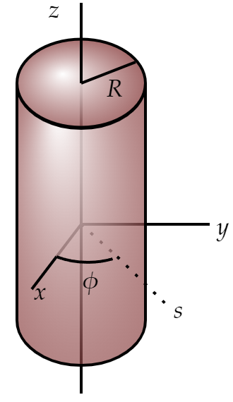

An infinitely long cylinder, of radius $R $, carries a "frozen-in" magnetization, parallel to the axis:
\[\mathbf{M}=ks \hat{z} \] Where $k $ is a constant and $s $ is the distance from the axis; there is no free current anywhere.
Find the magnetic field inside and outside the cylinder by two different methods:
(a) As in section 6.2, locate all the bound currents, and calculate the field they produce.
(b) Use Ampére's law (in the form of Eq. 6.20) to find $\mathbf{H} $, and then get $\mathbf{B} $ from Eq. 6.18. (Notice that the 2nd method is much faster, and avoids any explicit reference to the bound currents).
As we did on the last problem (6.8), let's calculate the bound charges. Recall:
\begin{align*} \text{Volume} \;\;\; \mathbf{J}_b &= \nabla \times \mathbf{M} \\ \text{Surface} \;\;\; \mathbf{K}_b &= \mathbf{M}\times \hat{\mathbf{n}} \end{align*}So
\begin{align*} \text{Volume} \;\;\; \mathbf{J}_b &=-k \hat{\mathbf{\phi }} \\ \text{Surface} \;\;\; \mathbf{K}_b &= kR \hat{\mathbf{\phi }} \end{align*}Outside it is clear that $\mathbf{B}=\mathbf{0} $. Inside, let's calculate (using an amperian loop in the $sz $-plane) the enclosed current and then use Ampere's law:
\begin{align*} I_{\text{enc} }^{\text{inside} } &= \int \mathbf{J}_b\cdot d\mathbf{a} + \int \mathbf{K}_b\cdot d\mathbf{l} \\ &= kls \end{align*}So
\begin{align*} B &= \frac{1}{l}\mu _0 I_{\text{enc} } \\ &= \mu _0 ks \\ \text{So...} \;\;\; \mathbf{B} &= \mu ks \hat{\mathbf{z}} \end{align*}There is no free charge so
\[\mathbf{H}=\mathbf{0} \]So
\begin{align*} \mathbf{B} &= \mu _0 (\mathbf{H}+\mathbf{M}) \\ &= \mu _0 \mathbf{M}\\ &= \begin{cases} \begin{matrix} \mu _0 ks \hat{z} & \text{inside} \\ \mathbf{0} & \text{outside} \\ \end{matrix} \end{cases} \end{align*}Since outside we have $\mathbf{M} =\mathbf{0}$.